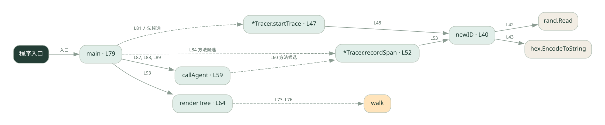

2-15 · 全课程第 35 节
跨角色调用链
033.go
源码快照 fbb0e29bd2af · 静态解析 · 2026-09-10
01 / 要完成的事
给一次请求和每段调用生成标识，再按父子关系还原树。
02 / 为什么要做
多个执行者的日志混在一起时，需要知道哪些记录属于同一请求。
03 / 当前代码状态
主要展示本地计算、内存状态或模拟流程；是否写文件/启动子进程请看调用表。 本次只做静态解析，没有运行练习，也没有替你填写或修改原代码。
04 / 调用图
打开大图 ↗实线：源码中的直接调用；虚线：函数引用/注册、动态调用或按方法名推断的候选。L 是调用所在源码行号。箭头不表示执行顺序或每次必经；分支、循环、异步调度及框架内部调用需结合源码。灰色是外部/未解析目标，橙色是动态分发；省略 print、len 和常规容器操作以减少干扰。孤立函数可能尚未接入。

先从 main（程序入口） 出发，沿箭头找到本文件函数，再查看外部调用或动态分发。右侧调用清单保留所有静态调用点，能回到原文件逐行对照。
05 / 函数定位
| 函数 / 定义行 | 职责（源码注释） | 内部调用 |
|---|---|---|
newIDL40 | newID：生成 8 位十六进制短 id（4 随机字节 → hex） | make, rand.Read, hex.EncodeToString |
*Tracer.startTraceL47 | startTrace：一次请求一个 trace_id，作为整条链路的标识 | newID |
*Tracer.recordSpanL52 | recordSpan：记一个 span（trace_id, 名字, 父 span），返回它的 span_id | newID, append |
callAgentL59 | callAgent：模拟「跨 agent 调用」——把 tracing 上下文（trace_id + 父 span）传给下一个 agent | t.recordSpan |
renderTreeL64 | renderTree：按 parent 把 span 拼成树形文本 | append, fmt.Printf, walk |
mainL79 | 以源码函数体为准；下列调用展示其依赖。 | tracer.startTrace, tracer.recordSpan, callAgent, fmt.Printf, len, renderTree, fmt.Println |
这样做的优点
能看清调用归属和上下游关系。
代价与局限
本地树形演示不包含跨服务上下文传播、采样与集中存储。
适用场景
理解 trace/span 和调试多步调用。
不宜直接照搬
直接替代完整分布式可观测平台。
动手检验理解
让同一角色被两个父节点调用，检查是否能按 parent 区分。
有未实现位置时先预测，再补齐验证。能启动不等于逻辑正确。
查看全部 21 个静态调用 / 引用点
| 调用方 | 目标 | 源码行 | 类型 |
|---|---|---|---|
| newID | make | 41 | 调用 |
| newID | rand.Read | 42 | 调用 |
| newID | hex.EncodeToString | 43 | 调用 |
| *Tracer.startTrace | newID | 48 | 调用 |
| *Tracer.recordSpan | newID | 53 | 调用 |
| *Tracer.recordSpan | append | 54 | 调用 |
| callAgent | t.recordSpan | 60 | 调用 |
| renderTree | append | 67 | 调用 |
| renderTree | fmt.Printf | 72 | 调用 |
| renderTree | walk | 73 | 调用 |
| renderTree | walk | 76 | 调用 |
| main | tracer.startTrace | 81 | 调用 |
| main | tracer.recordSpan | 84 | 调用 |
| main | callAgent | 87 | 调用 |
| main | callAgent | 88 | 调用 |
| main | callAgent | 89 | 调用 |
| main | fmt.Printf | 91 | 调用 |
| main | fmt.Printf | 92 | 调用 |
| main | len | 92 | 调用 |
| main | renderTree | 93 | 调用 |
| main | fmt.Println | 94 | 调用 |